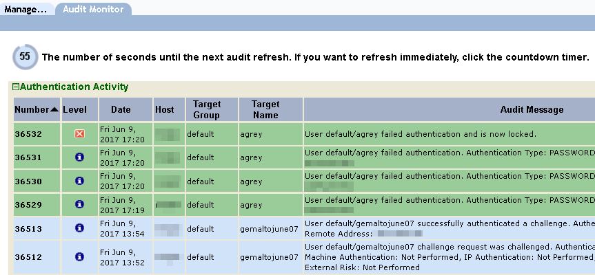

|
IdentityGuard Server 13.0 Administration Guide |
|
IdentityGuard Server 13.0 Administration Guide |
With Release 11.0 Patch 203998 or later, the Administration interface features an audit monitoring tab that allows an administrator to view activities as they occur in the Entrust IdentityGuard deployment.

Prerequisites for displaying the Audit Monitor tab in the Administration interface
● Entrust IdentityGuard is configured to send audits to a database. See Configure an audit database.
● The logged-in administrator has the auditList permission in the Audit permission category. The built-in roles superuser and auditor have this permission enabled by default. To create a role with this permission, see Create a role. To add this permission to an existing role, see Modify a role.
To view the Audit Monitor, click the Audit Monitor tab while viewing the Administration interface Home page.
The Audit Monitor displays the 10 most recent audits in each of three categories: Authentication Activity, System Activity, and Administrator Activity. The audit lists are refreshed every 60 seconds, and the audits that are new since the last 60-second interval are highlighted in green.
Some ways you could use the Audit Monitor:
● Observe system behavior to troubleshoot authentication issues experienced by a user. (Authentication Activity)
● Scan for system anomalies. (System Activity)
● Troubleshoot issues experienced by Entrust IdentityGuard administrators, or verify that correct steps have been followed as administrators are trained. (Administrator Activity)
You can filter what you see to focus on troubleshooting issues, or you can monitor system performance while performing other Entrust IdentityGuard tasks. The topics in this section describe the Audit Monitor features.
Note: The Administration interface logs out the current user after 30 minutes of inactivity, even if the Audit Monitor is running. Only actions that involve user interaction with the Administration interface keep the session active. If popup windows are open when a session times out, they continue to update until they are no longer able to retrieve new audits. Entrust IdentityGuard messages redirect users to the login page.